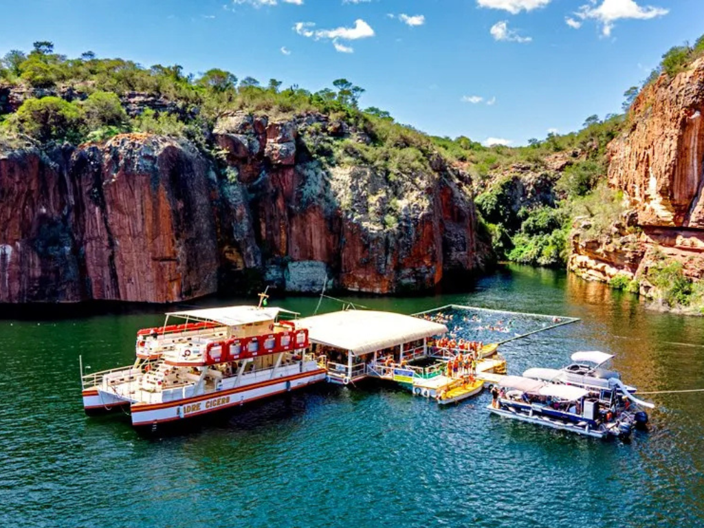

Sergipe, o menor estado brasileiro em extensão territorial, destaca-se pela sua riqueza cultural vibrante e por uma das orlas mais organizadas e acolhedoras do país, especialmente em sua capital, Aracaju. O estado é um verdadeiro mosaico de encantos que vai do histórico município de São Cristóvão, uma das cidades mais antigas do Brasil com seu conjunto arquitetônico tombado pela UNESCO, até a grandiosidade natural do Cânion do Xingó, onde as águas verde-esmeralda do Rio São Francisco serpenteiam entre paredões rochosos impressionantes. Reconhecido nacionalmente como a capital do forró durante as celebrações juninas, Sergipe preserva tradições autênticas, uma culinária farta em frutos do mar e um ambiente que equilibra, de forma singular, o legado histórico, a beleza cênica de seu litoral e a hospitalidade calorosa de seu povo.
